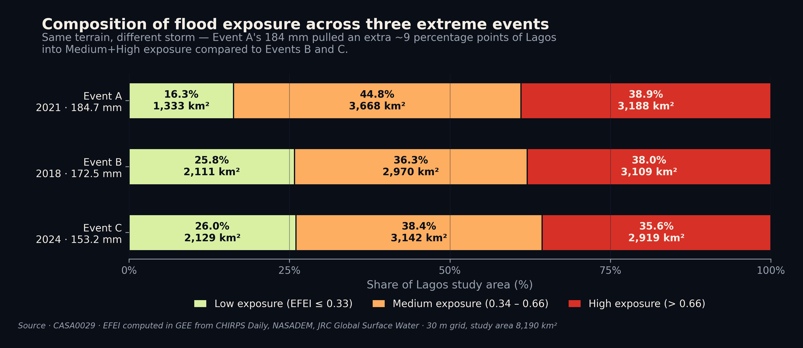
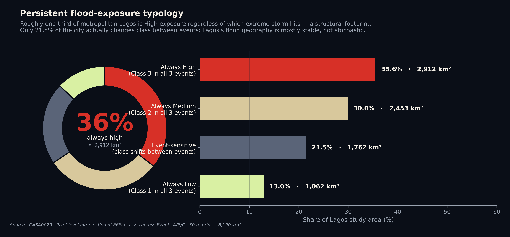
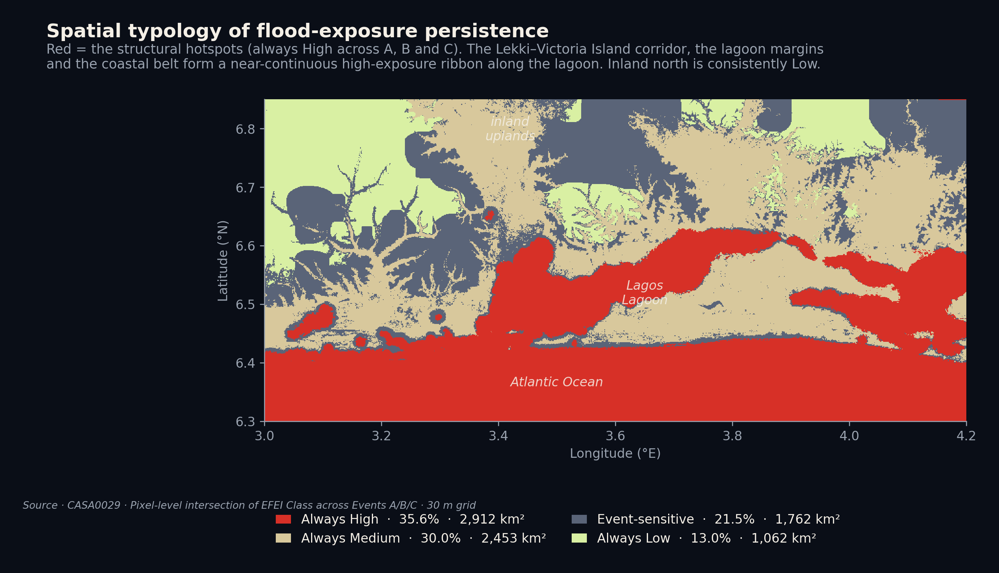
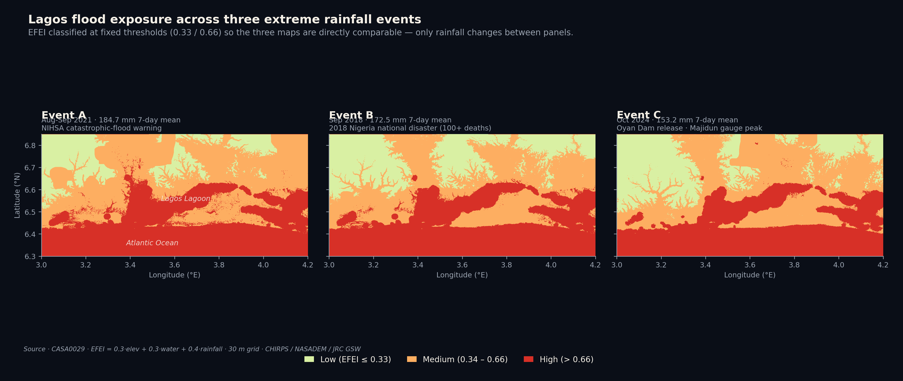
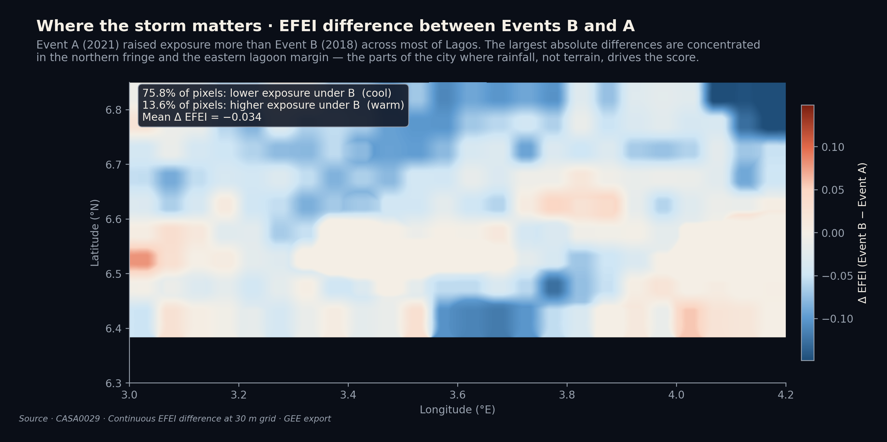
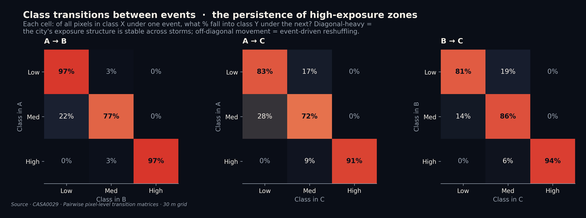

We compared three extreme rainfall events from the past decade to ask whether Lagos's flood-exposure surface really shifts with the storm — or whether the same coastal, lagoon-fringed footprint always lights up. The honest answer: both, but unequally.
Lagos is built on lagoon margins, sandbars, and reclaimed coastal land. Wet-season flooding has triggered three national disaster declarations in the past fifteen years (2012, 2018, 2022), displaced hundreds of thousands of residents, and is projected to intensify as the metropolitan area grows toward an estimated 32.6 million people by 2050.
Conventional flood-susceptibility maps average hazard over decades and produce a single time-invariant surface. This is a defensible engineering choice, but it leaves a communication problem: adaptation, drainage operations and emergency response all happen at the scale of individual storms. A resident in Lekki does not experience "average" rainfall — they experience September 2021. A drainage engineer does not design for "average" — they design for the next event in the tail of the distribution.
Our project reframes flood exposure as an interaction between fixed urban geography and the particular storm that arrives. We hold the structural inputs constant — terrain and proximity to persistent water — and let the rainfall component vary across three real, automatically-selected extreme events. The result is a comparative visualisation: same city, three storms, three exposure surfaces. The differences and the persistences are both informative.
The EFEI is a weighted linear combination of three components, each rescaled to [0, 1]. Weights are not empirically calibrated — they are an explicit analytical position: persistent physical determinants jointly carry 60%, the event-specific signal carries 40%. This balance lets a storm meaningfully reshape the exposure surface without overriding the structural role of terrain and water.
NASADEM (30 m). Inverted and capped at 30 m above sea level — pixels above the cap receive zero elevation risk. Lagos's median elevation is well under 10 m.
Distance transform from JRC Global Surface Water (occurrence > 50%). Inverted and capped at 1,500 m — beyond that, persistent-water encroachment without pluvial surcharge is unrealistic.
CHIRPS Daily (~5.5 km) summed over the 7-day event window, focal-mean smoothed at 2 km, rescaled across a fixed 50–200 mm range — so the three EFEI surfaces are directly comparable.
Events were selected automatically rather than picked from headline coverage. We computed the 7-day rolling mean rainfall across the study area for every day of 2015 – 2024, identified the 95th percentile threshold (≈ 91.5 mm), and chose three events at or above that threshold separated by at least seven days to ensure meteorological independence.
Peak of the 2021 wet season. NIHSA issued a catastrophic-flood warning for September. Lagos's most intense 7-day window in the decade.
2018 Nigeria national disaster declaration; over 100 flood-related deaths reported nationally during the wider event period.
Late-season tail event. Coincided with the Oyan Dam controlled release; Majidun gauge hit its 1.466 m annual peak.
All three events fall in the late rainy season (Aug – Oct), characteristic of extreme precipitation in coastal West Africa. Using an automated selection criterion rather than cherry-picking historically "notable" storms removes subjective bias and makes the selection reproducible.
Before looking at where the exposure lands, it helps to ask how much of the city falls into each class under each event. Figure 1 stacks the three EFEI classes — Low, Medium, High — for Events A, B, and C, using the same fixed thresholds (Low ≤ 0.33, Medium 0.34 – 0.66, High > 0.66) so the bars are directly comparable.

The non-trivial finding here is that Event A pushed roughly 9 percentage points more of Lagos into the Medium-or-High band than Event B, despite Event A's 7-day rainfall total being only ≈ 7% higher than B's. The EFEI is non-linear in rainfall intensity: a moderately worse storm yields a disproportionately worse exposure surface, because the rainfall component pushes more pixels past the Low/Medium threshold rather than uniformly raising the score. This is exactly the kind of pattern that a static susceptibility map cannot show.
If the per-event composition is the easy story, the persistence pattern is the analytically important one. We classified every pixel by its behaviour across all three events: is it High in all three? Medium in all three? Low in all three? Or does it shift class between storms?

The geography of risk in Lagos is persistent rather than stochastic. The structural footprint is large, and it does not move very much when the storm changes.
This matters for how the index should be interpreted. The 21.5% "event-sensitive" zone is where the EFEI's event-specific component is doing the meaningful work — these are the pixels for which the answer to "is this place flood-exposed?" depends on which storm you ask about. For the rest of the city, the answer is fixed by terrain and water, and individual storms only modulate it.
Knowing that 35.6% of Lagos is "always High" is one thing. Knowing where those pixels are is the actionable part. Figure 6 maps every pixel of the study area by its persistence class.

This figure is the project's primary qualitative validation: the structural high-exposure footprint matches the geographic features that any Lagos resident or hydrologist would name as flood-prone, without having been told to. We did not feed the model historical flood reports or built-up area; we fed it elevation, water proximity, and three storms. The fact that the resulting "always High" zone reproduces the lagoon margin and coastal belt is consistency, not circularity.
Figure 3 shows the EFEI Class raster for each of the three events side by side. The colour ramp and class breaks are identical, so the maps are directly comparable.

The takeaway from looking at the three maps together is the inverse of what a viewer might naively expect from a "scenario-based" map series: the dominant impression is visual similarity, not difference. The interesting differences live in the interior, away from water — exactly the zone where the rainfall component is the only thing the EFEI is moving.
To make the cross-event difference legible, Figure 4 subtracts the continuous EFEI surfaces of the two highest-rainfall events. Cool colours (blue) mean Event B was lower exposure than Event A in that pixel; warm colours (red) mean Event B was higher.

The lagoon margin and coastal ribbon, by contrast, show very small differences between the two events: their EFEI is dominated by the structural components, which by construction do not change between storms. This is the visual confirmation of the persistence story — and it is also what the difference map is supposed to show if the index is behaving correctly.
The 21.5% of Lagos that is "event-sensitive" is doing something specific: pixels move between adjacent classes (Low ↔ Medium, Medium ↔ High), but they almost never jump from Low to High or High to Low between events. Figure 5 shows the row-normalised transition matrices.

This is the analytically tightest statement we can make about the model's behaviour: the EFEI is event-sensitive at the boundary between adjacent classes, and event-insensitive in the bulk. For an index whose explicit goal is to separate structural from event-driven risk, this is exactly the right behaviour to see.
Validation in this project is qualitative, by design. The EFEI is an exposure index, not a hydraulic flood model — so the right validation question is "do the high-exposure zones the index produces correspond to where Lagos actually floods?", not "does the inundation depth match a gauge?".
A stronger validation would compare each event's high-exposure footprint to a Sentinel-1 SAR water-extent product for the same dates. This was scoped but not delivered within the project timeframe and is noted as an immediate next step.
Code, data processing notebooks, and the project's full reference list are documented in the project repository: github.com/HaoyuJiang123/lagos-flood-viz. AI tools were used in drafting and analysis, as detailed in the Contributions Table of the Project Info File.